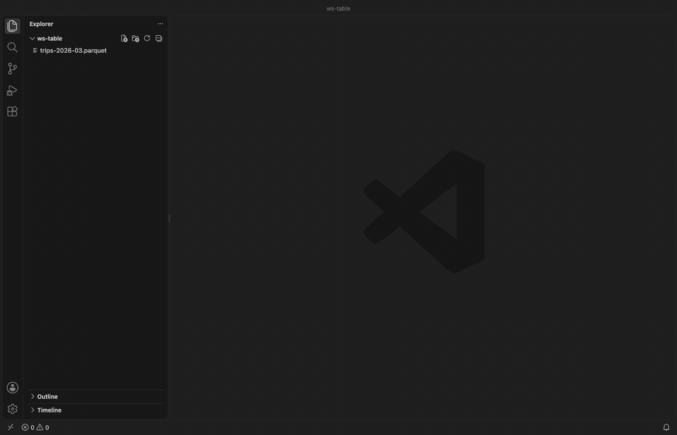
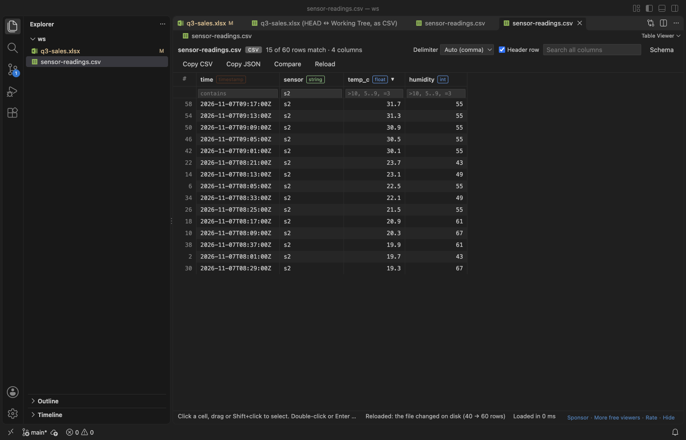
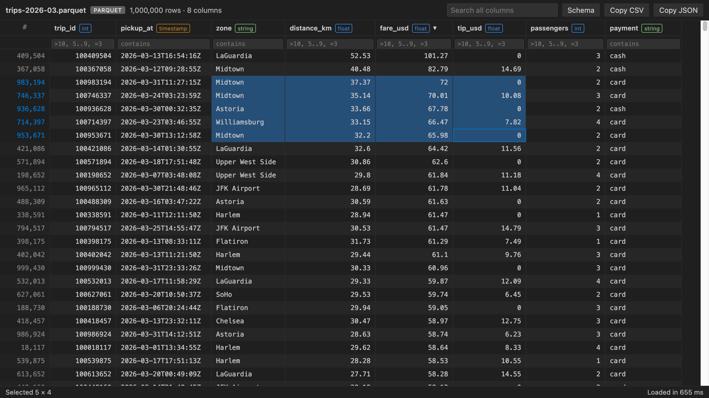
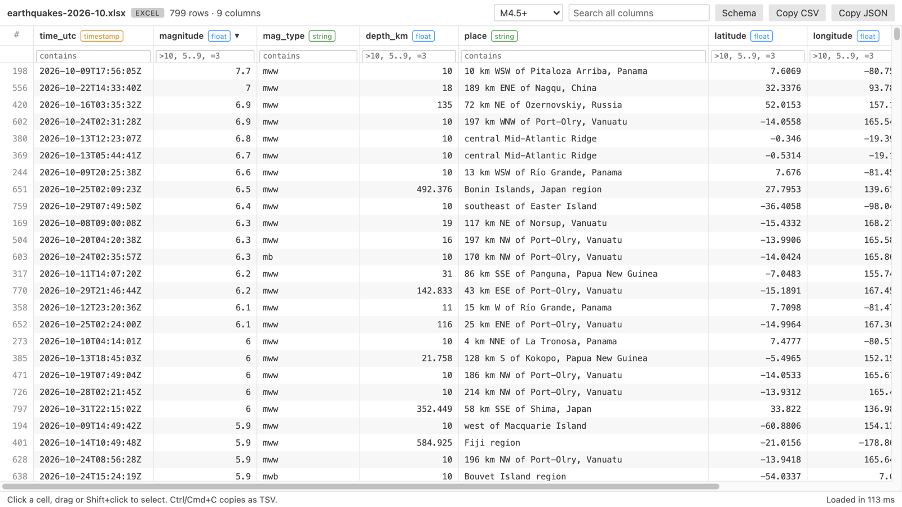
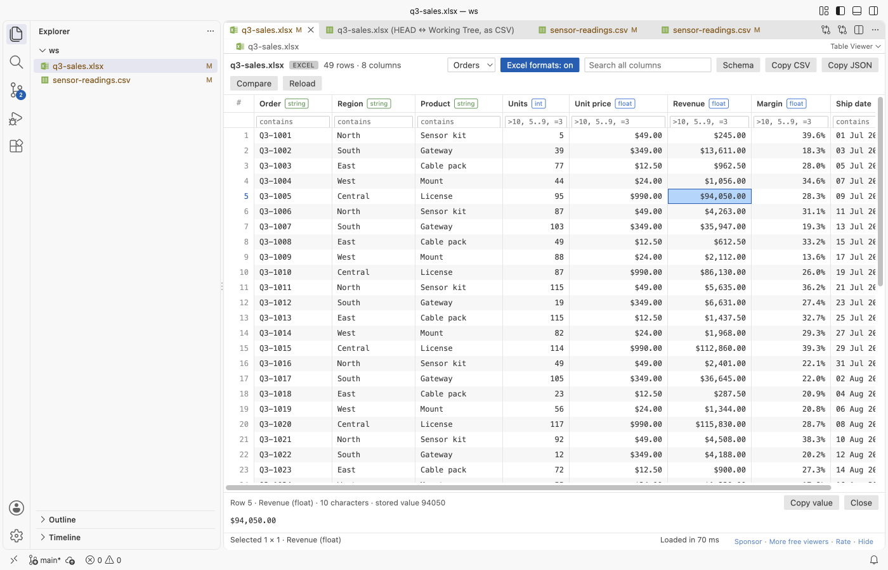
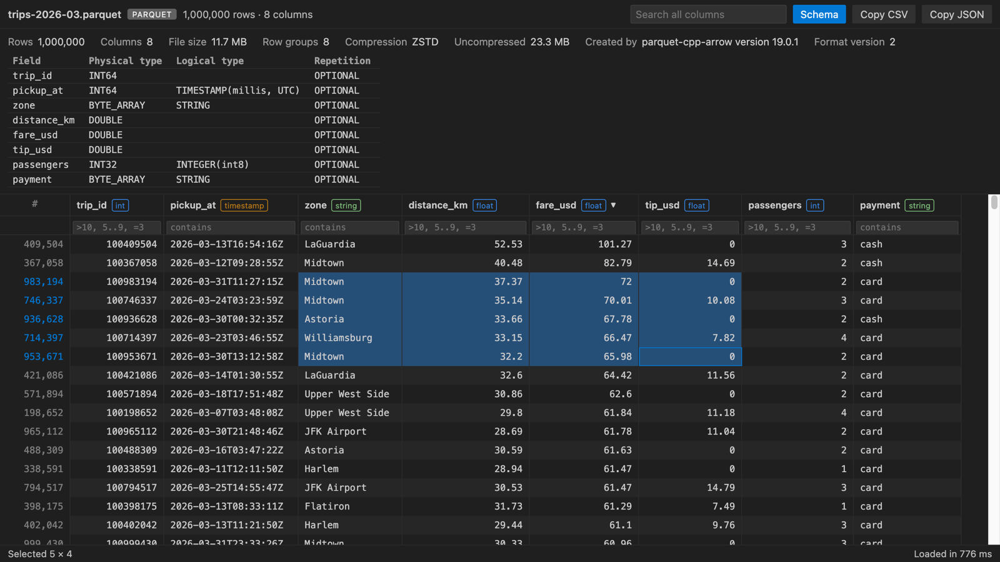

Open Parquet, Excel and CSV files as a table in VS Code
XLSX Viewer for Excel, CSV & Parquet, a VS Code extension by Zovo
Free, with no paywall, no ads, no license banner, no evaluation popup and no account. There is nothing to buy. The SQL filter, column stats and export are free too.
Free, MIT license. Needs VS Code 1.90.0 or newer. Extension ID zovo.table-viewer-vscode, version 0.3.3.
An XLSX viewer, Excel viewer, CSV viewer and Parquet viewer for VS Code. It shows Excel, CSV and Parquet files as a sortable, filterable table, even at 1,000,000 rows, with no Python and no setup, and it sends nothing over the network.
New in 0.4:
- Big Excel files open fast. In a real VS Code window, a 48 MB workbook with 660,000 rows showed its first rows in 0.5 s and finished loading in 3.4 s. Version 0.3 took 10 s before it showed anything, and the extension host used 1.3 GB. Now it uses about 0.5 GB.
- Formulas: the cell panel shows the formula of the cell (
=SUM(B2:B9)) next to its result, and "Formulas: on" in the toolbar shows every formula in the grid, like Ctrl+in Excel. Error cells show#DIV/0!and#N/A` as Excel does, and a formula with no saved result shows the formula instead of an empty cell. - Copy Markdown: copies the selection (or the whole view) as a Markdown table, as it looks on screen, ready for a README, an issue or an AI chat.
- Freeze first column: keeps the first column in view while you scroll sideways. The header row always stays in view.
- Free for everyone: the SQL
WHEREfilter, column stats (count, nulls, distinct, min, max, mean, top values) and export to CSV, TSV, JSON or JSON Lines. They were planned as paid features. Now nothing is locked. - Encoding: CSV files in Shift_JIS, GB18030, Big5, EUC-KR, Windows-1251 and UTF-16 without a byte order mark are detected, and an Encoding list in the toolbar reads the file in any of 13 encodings.
New in 0.3:
- Excel number formats: cells look the way Excel shows them: 25.0%, $1,234.50, 1,234,567 and the dates in their own format. Sort, filters and copy still use the stored values, and the cell panel shows both.
- Compare with Git HEAD: see which rows of a CSV, Excel or Parquet file changed since the last commit, in VS Code's diff editor. You can also compare two table files.
- Auto-reload: when a script,
git pullor an AI agent rewrites the file, the table reloads by itself and keeps your sort, filters and sheet.

A real VS Code 1.142 window running this extension on a generated sales workbook (49 orders, 2 sheets). The "Excel formats: on" switch is in the toolbar.

Compare with Git HEAD on the same workbook after an edit. Each sheet is a section, and changed, added and removed rows are marked.
- Opens fast. Rows are read in a background thread and only the rows and columns on screen are drawn, so VS Code doesn't freeze, even on a file with 5,000 columns. A big CSV or Excel file shows its first rows while the rest load, and a Parquet file with several row groups shows the first group early.
- No Python, no kernel, no account. It's plain JavaScript that runs offline and sends nothing anywhere.
- Answers the usual questions in one place. You get the column types, the row count, the full Parquet schema, sort, filter, a SQL filter, column stats, copy as CSV, JSON or Markdown, export, and the full text of any cell with its JSON indented.

A real VS Code 1.142 window running this extension on a generated 1,000,000 row taxi-trip Parquet file (12 MB, zstd, made by scripts/screenshot/make_trips.py). It loaded in 0.8 s on an M-series Mac.
Quick start
- Install Table Viewer and click any
.parquet,.xlsx,.xlsor.odsfile. It opens as a table. - For a
.csvor.tsvfile, click the table icon at the top right of the editor (or right-click the file and pick "Open in Table Viewer").

Recorded in the same window. The white arrow is drawn in to show where each click lands.
Run "Table Viewer: Get Started" from the Command Palette for a short tour.
Questions people ask
How do I view a Parquet file in VS Code?
Install Table Viewer, then click any .parquet or .pq file in the Explorer. It opens as a table with the column types in the header. The Schema button shows the full Parquet schema, row groups and compression.
Can VS Code open xlsx files?
Not by itself. With Table Viewer, .xlsx, .xlsm, .xlsb, .xls and .ods files open as a table when you click them, and workbooks with several sheets get a sheet picker. It's read-only, and Excel files over 50 MB show a message instead of loading (you can raise the limit in settings).
How do I see a CSV file as a table in VS Code?
Open the .csv or .tsv file and click the table icon at the top right of the editor, or right-click the file and pick "Open in Table Viewer". CSV files keep opening as text by default, since people often edit them. The delimiter is detected for you.
Do I need Python or Jupyter?
No. Table Viewer is plain JavaScript that runs inside VS Code. There's no kernel to start and no pandas to install, which is the main difference from Microsoft Data Wrangler.
How big a file can it open?
It loads up to 1,000,000 rows per file by default and draws only the rows on screen, so VS Code stays responsive. On an M-series Mac a 1,000,000 row Parquet file loaded in 655 ms. A banner tells you when a file has more rows than the limit.
Is it free, and does it send my data anywhere?
It's free and MIT licensed. It makes no network requests and has no telemetry. Files are read on your machine.
What you can do
Click a column header to sort it. Clicks cycle through ascending, descending and the file's own order. Nulls always go last.
Type in the box under a header to filter that column. Number columns take >10, >=10, <5, =3, !=3 and ranges like 5..9. Text columns match any part of the text, =word matches exactly and !word drops rows that contain it. empty and !empty work everywhere. The search box at the top looks in every column at once.
Drag or Shift+click to select cells. Click row numbers to select whole rows, or the # corner (or Ctrl+A) to select everything. "Copy CSV" copies the selection with a header row, and "Copy JSON" copies an array of objects that keeps numbers, booleans and nested values as JSON. "Copy Markdown" copies a Markdown table of the cells as shown, with number columns right-aligned. Ctrl+C (Cmd+C on macOS) copies plain tab-separated values, which paste straight into Excel or Google Sheets as cells. With nothing selected, the copy buttons take the whole filtered view.
"SQL" opens a WHERE box that filters all rows, for example fare > 20 AND (city = 'Paris' OR city LIKE 'Lon%') AND tip IS NOT NULL. "Stats" shows count, nulls, distinct values, min, max, mean and the top values of each column for the rows in view. "Export" saves the rows in view, filtered and sorted, as CSV, TSV, JSON or JSON Lines.
"Freeze first column" keeps the first column on screen while you scroll to the right. The column names and filter boxes always stay at the top.
Double-click a cell, or press Enter, to open the cell panel under the table. It shows the whole value, wrapped, even past the 2,000 characters a grid cell shows. JSON objects and arrays are indented, and "Raw" shows the text as it is in the file. The panel follows the arrow keys, "Copy value" copies what it shows, and Esc closes it.
Double-click the edge of a column header to fit the column to the rows loaded so far.
Excel number formats
Excel stores 0.25 and shows 25%. Table Viewer shows the cell the way Excel does, using the number format saved in the workbook: percentages, currency, thousands separators, decimals and custom date formats. Formula cells show the result Excel saved with the file, and error cells show #DIV/0!, #N/A or #REF!.
"Formulas: on" in the toolbar shows the formula text of every formula cell instead of its result. Shared formulas show the formula of each cell, with its own references. A formula that was never calculated (a file written by a script and not opened in Excel since) shows its formula instead of an empty cell.
- Sort and the number filters (
>0.2,5..9) use the stored values, so a column of percentages sorts as numbers. - The search box finds both the stored value and the text as shown, so
$1,234finds the cell. - Copy CSV, Copy JSON and Ctrl+C copy the stored values, so numbers paste into a spreadsheet as numbers.
- The cell panel (double-click a cell) shows the text and, next to it, the stored value and the formula.
- "Excel formats: on" in the toolbar switches one tab to the stored values. The setting
tableViewer.excelFormatssets the default. - Dates in Excel's default short date format (m/d/yy) stay as ISO dates such as 2024-01-15, because Excel shows that format in each reader's own locale.
Compare with Git HEAD or another file
Right-click a .csv, .tsv, .xlsx, .xls, .ods or .parquet file and pick "Compare with Git HEAD", or use the Compare button in the table's toolbar. Table Viewer reads the committed version with git cat-file and opens both versions as CSV text in VS Code's diff editor, so changed, added and removed rows are marked. An Excel workbook gives one section per sheet.
"Compare with Another Table File..." does the same for any two table files, for example last week's export and this week's. Select two files in the Explorer first and it compares those two. The command also shows in the Source Control view for changed data files.
- The diff uses stored values, not the display text, so a change from 0.251 to 0.25 shows even when both display as 25%.
- Each table is compared up to 100,000 rows (setting
tableViewer.maxCompareRows). Past that, the text ends with a note. - Git runs on your machine with repository hooks switched off. It needs a trusted workspace. A file stored in Git LFS shows a note instead of a diff of the pointer file.
Auto-reload when the file changes
Table Viewer watches the open file. When a script, a notebook, git pull or an AI agent writes it again, the table reloads within about half a second:
- The sort, the column filters, the search and the Excel sheet stay. Columns are matched by name, so they survive a column that moved.
- The old rows stay on screen until the new ones are ready, so the table never goes blank.
- The status bar says "Reloaded: the file changed on disk (1,000 → 1,250 rows)".
- If the file is half written and can't be read, the last good table stays, and the next change tries again.
- The Reload button in the toolbar reads the file on request. Set
tableViewer.autoReloadtofalseto reload only with the button.

The Schema button shows each column's type. For Parquet it also shows the full schema tree with physical and logical types, plus repetition, row groups, compression, the writer and the key-value metadata.
Supported files
| Format | Extensions | Opens by default | Reader |
|---|---|---|---|
| Parquet | .parquet, .pq | yes | hyparquet (MIT), with snappy, gzip, zstd, brotli and lz4 |
| Excel and OpenDocument | .xlsx, .xlsm, .xlsb, .xls, .ods | yes | SheetJS Community Edition 0.20.3 (Apache-2.0) |
| CSV and TSV | .csv, .tsv, .tab, .psv | no, use "Open in Table Viewer" | built-in streaming parser |
CSV files keep opening in the text editor by default, since people edit them as text. The delimiter (comma, tab, semicolon or pipe) is detected from the first lines. When the guess is wrong, for example in a semicolon file whose text has commas in it, pick comma, tab, semicolon, pipe or colon in the toolbar's Delimiter list. Untick "Header row" for a file that has none, and the columns are named column_1, column_2 and so on. Both choices are kept for each file in the workspace. The encoding is detected: UTF-8 and UTF-16 (with or without a byte order mark), Windows-1252 (Excel's "CSV" on Western Windows), Shift_JIS, GB18030, Big5, EUC-KR and Windows-1251. If the text still looks wrong, pick the encoding in the toolbar's Encoding list; the choice is kept for the file. Excel workbooks with several sheets get a sheet picker.
Column types come from the Parquet schema, from Excel cell types, or for CSV from the values themselves (int, float, bool, date, timestamp or string). Integers too large to hold exactly stay as text, so no digits are lost.
Limits and settings
| Setting | Default | What it does |
|---|---|---|
tableViewer.maxRows | 1,000,000 | Rows to load per file. A banner says when a file has more. |
tableViewer.maxFileSizeMB | 512 | How much of a CSV/TSV file to read, and the size limit for big .xlsx and .xlsm workbooks, which are streamed. Parquet is read by row group, so only maxRows applies. |
tableViewer.maxExcelSizeMB | 50 | .xls, .xlsb, .ods and small .xlsx files are read whole. Bigger ones show a message instead of loading. |
tableViewer.maxCopyRows | 100,000 | Most rows copied to the clipboard at once. |
tableViewer.autoReload | true | Reload the table when the file changes on disk. |
tableViewer.excelFormats | true | Show Excel cells with the workbook's number formats. |
tableViewer.maxCompareRows | 100,000 | Rows per table (per sheet) in Compare with Git HEAD and Compare with Another Table File. |
tableViewer.askForRating | true | Ask for a Marketplace rating after 3 files opened without an error on 2 different days. "Later" asks one more time after 7 days, "No thanks" never again. It never asks after an error. Turn it off with false. |
On our test machine (Apple Silicon, Node 22), the test suite loads a 1,000,000 row CSV (about 30 MB) in 0.5 s and a 1,000,000 row Parquet file in 0.15 s. It sorts either one by a number column in about 0.2 s and filters in under 0.1 s. Your numbers will differ with the column count and the file.
Table Viewer is read-only. It doesn't edit or save files.
Compared with Data Wrangler
Microsoft Data Wrangler is a full data-cleaning tool. It needs a Python environment with pandas and runs a kernel. Table Viewer does less. It shows the file, sorts, filters and copies, and it opens before a kernel would have started. Use Data Wrangler when you need to transform data in Python, and Table Viewer when you just want to look.
Free
Everything above is free, including the SQL filter, column stats and export. There is no paid tier, no trial, no license key to enter and no banner.
More screenshots
| Parquet, dark theme | Excel, light theme |
|---|---|
 |  |
| Excel number formats, light theme | Auto-reload after a script wrote the CSV |
|---|---|
 |
| Parquet schema, dark theme | CSV with filters, light theme |
|---|---|
 |  |
Real output, light and dark. The Excel and CSV files hold the real USGS earthquake catalog for October 2026 (2,226 events of magnitude 2.5 or more). The Parquet file is a generated 1,000,000 row taxi-trip table (11.7 MB, zstd). Each shot is the extension's own webview page, with its Content Security Policy, fed by the extension's real reader and message protocol and captured in headless Chrome. The Parquet file loaded in 0.8 s on an M-series Mac.
Privacy
Table Viewer makes no network requests and collects no telemetry. Files are read on your machine in a worker thread. The table webview runs under a strict Content Security Policy with no remote scripts, and every value from the file is written as plain text, never as HTML.
License
MIT. Bundled third-party licenses are in THIRD-PARTY-NOTICES.txt.
Rate this extension on the Marketplace if it saved you time. A rating helps other people find it.
Guides
- Open an Excel .xlsx file in VS Code
- Open an Excel file in Cursor
- See a CSV file as a table in VS Code
- Open a Parquet file in VS Code
Install XLSX Viewer
Click the button to open VS Code and install it, or press Ctrl+P (Cmd+P on macOS) in VS Code and run ext install zovo.table-viewer-vscode.
Free, MIT license. Needs VS Code 1.90.0 or newer. Extension ID zovo.table-viewer-vscode, version 0.3.3.
Source code and issues are on GitHub.
Support this work
If this extension saves you time, you can support the work on GitHub Sponsors. Monthly tiers start at $5, and one-time tiers start at $15. Sponsorship is optional, and the tool works the same without it.